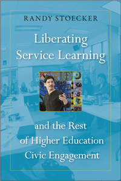

<body bgcolor="#FFFFFF" text="#000000" link="#0000FF" vlink="#CC0000" alink="#CC0000"><center><hr width="350" size="1" align="center" noshade>Challenging-and changing-our thinking about higher education community engagement<hr width="350" size="1" align="center" noshade><p><a href="https://cdcshoppingcart.uchicago.edu/Cart/ChicagoBook.aspx?ISBN=&&PRESS=temple" target="_top">Buy this book!</a> | <a href="https://cdcshoppingcart.uchicago.edu/Cart/Cart.aspx?PRESS=temple" target="_top">View Cart</a> | <a href="https://cdcshoppingcart.uchicago.edu/Cart/Cart.aspx?PRESS=temple" target="_top">Check Out</a></p><p></p></center><!--none//--><h1 class = "booktitle">Liberating Service Learning and the Rest of Higher Education Civic Engagement</h1>
<h3>Randy Stoecker </h3>
paper: $27.95, May 16<BR>EAN:&nbsp;978-1-4399-1352-9<BR><font color=#990033>Available</FONT><font size=-7><br>&nbsp;</font></p><p class="info">cloth: $89.50, May 16<BR>EAN:&nbsp;978-1-4399-1351-2<BR><font color=#990033>Available</FONT><font size=-7><br>&nbsp;</font></p><p class="info">e-book: $27.95, May 16<BR>EAN:&nbsp;978-1-4399-1353-6<BR><font color=#990033>Available</FONT><font size=-7><br>&nbsp;</font></p></p></td></tr></table>
<BR> <p class="info">238 pp<BR> 6 x 9<BR> 1 line drawings <p class="info"><font size=-7>&nbsp;</font></p><p class="info">
</P><BLOCKQUOTE><p>"Liberating Service Learning and the Rest of Higher Education Civic Engagement&#8203; <i> </i><i>is powerful and innovative. No one has addressed so deeply and so comprehensively the strengths and limitations of service learning and civic engagement. With political sensitivity and passion, Stoecker expands the scope, complexity and (we can only hope) the impact of previous critiques. He takes service learning to the pedagogical woodshed and spares no rod in exposing its weaknesses-fleshing out the ways in which service learning has failed on its own grounds to meet its own objectives. Stoecker argues strongly that service learning has not had anywhere near the pedagogical and community impact it has been promising and promoting.</i>"<br/>-<b>Corey Dolgon</b>, Professor of Sociology and Director of Community-Based Learning at Stonehill College<br>
</BLOCKQUOTE>
<p>Randy Stoecker has been "practicing" forms of community-engaged scholarship, including service learning, for thirty years now, and he readily admits, "Practice does not make perfect." In his highly personal critique, <i>Liberating Service Learning and the Rest of Higher Education Civic Engagement, </i>the author worries about the contradictions, unrealized potential, and unrecognized urgency of the causes as well as the risks and rewards of this work. <br/><br/>Here, Stoecker questions the prioritization and theoretical/philosophical underpinnings of the core concepts of service learning: 1. learning, 2. service, 3. community, and 4. change. By "liberating" service learning, he suggests reversing the prioritization of the concepts, starting with change, then community, then service, and then learning. In doing so, he clarifies the benefits and purpose of this work, arguing that it will create greater pedagogical and community impact. <br/><br/> <i>Liberating Service Learning and the Rest of Higher Education Civic Engagement</i> challenges-and hopefully will change-our thinking about higher education community engagement.<br>
<P CLASS="top"><A HREF="#top">BACK TO TOP</A></P>&nbsp;<h2 class="inpageheading"><A NAME="excerpt"></a>Excerpt</h2><p><A HREF="http://www.temple.edu/tempress/chapters_2400/2401_ch1.pdf">Read Chapter 1 (pdf).</a><p><br>
<P CLASS="top"><A HREF="#top">BACK TO TOP</A></P>
<BR>&nbsp;
<h2 class="inpageheading"><A NAME="reviews"></a>Reviews</h2>
<p>" <i>What is most enlightening about </i>Liberating Service Learning and the Rest of Higher Education Civic Engagement <i>, is Stoecker's framing of the teaching strategy's history. Drawing from his own experiences as a theoretician and practitioner, he boldly puts forward some of the contradictions that exist in the practice of service learning and the weaknesses of the type of institutionalization that has taken place. He presents an outlook of liberating service learning based on new forms of knowledge and engagement production with a raised consciousness where anger is transformed into grassroots power and policy change.</i>"<br/>-<b>Jose Calderñn</b>, Emeritus Professor of Sociology and Chicano/a Latino/a Studies at Pitzer College<br>
<p><i>"Stoecker makes a strong argument that service learning and the rest of higher education civic engagement ('service learning' functions as a catch-all term) is in need of liberating so that it can be liberating.... Although Stoecker offers something to annoy everyone, I still recommend </i>Liberating Service Learning <i> for its challenging examination of the spirit of service learning, in its present state and as it might be in future." </i><b><br/></b><i>-</i><b><i>Reflective Teaching</i></b><br>
<p><i>"Stoecker does not shy away from asking the hard questions, including challenging widely celebrated dominant theories, practices, and even histories in institutionalized service learning. He challenges those in the field to reflect on the language we use, terms like reciprocity, partnership, and social justice, and to critically examine if our practice actually aligns with proclaimed theories and values.... Stoecker understands the deep complexity of service learning work, tapping into the conflicting feelings practitioners navigate as we offer soundbites or quotes for news articles, write letters of recommendation, apply for grants, and receive awards and accolades for our work with the community. He challenges the field to ask the hard questions of not only ourselves but also of our institutional leaders, and encourages us to reconsider our practice and take risks."<br/></i>-<b><i>Partnerships: A Journal of Service-Learning and Civic Engagement</i></b><br>
<P CLASS="top"><A HREF="#top">BACK TO TOP</A></P>&nbsp;<P>
<h2 class="inpageheading"><A NAME="contents"></a>Contents</h2><P><span style="font-family: 'Verdana';font-size: 13px;" >Prelude: Confessions and Acknowledgments<br/><br/></span><span style="font-family: 'Verdana';font-size: 13px;font-weight: bold;" >I The Problem and Its Context<br/></span><span style="font-family: 'Verdana';font-size: 13px;" >1. Why I Worry<br/>2. A Brief Counterintuitive History of Service Learning<br/>3. Theories (Conscious and Unconscious) of Institutionalized Service Learning<br/><br/>Interlude<br/><br/></span><span style="font-family: 'Verdana';font-size: 13px;font-weight: bold;" >II Institutionalized Service Learning<br/></span><span style="font-family: 'Verdana';font-size: 13px;" >4. What Is Institutionalized Service Learning&rsquo;s Theory of Learning?<br/>5. What Is Institutionalized Service Learning&rsquo;s Theory of Service?<br/>6. What Is Institutionalized Service Learning&rsquo;s Theory of Community?<br/>7. What Is Institutionalized Service Learning&rsquo;s Theory of Change?<br/><br/></span><span style="font-family: 'Verdana';font-size: 13px;font-weight: bold;" >III Liberating Service Learning<br/></span><span style="font-family: 'Verdana';font-size: 13px;" >8. Toward a Liberating Theory of Change <br/>9. Toward a Liberating Theory of Community<br/>10. Toward a Liberating Theory of Service<br/>11. Toward a Liberating Theory of Learning<br/>12. Toward a Liberated World?<br/><br/>Postlude<br/><br/>References<br/>Index</span></P>
<P CLASS="top"><A HREF="#top">BACK TO TOP</A></P>
</P><BR>&nbsp;
<H2 class="inpageheading"><A NAME="author bio"></a>About the Author(s)</H2><p><b>Randy Stoecker</b> is a Professor in the Department of Community and Environmental Sociology at the University of Wis consin, with a joint appointment in the University of Wisconsin-Extension Center for Community and Economic Development. He is the co-editor (with Elizabeth A. Tryon and Amy Hilgendorf) of <i>The Unheard Voices: Community Organization and Service Learning</i>.<br>
<P CLASS="top"><A HREF="#top">BACK TO TOP</A></P>
<p><h2 class="inpageheading"><a name="subjects"></a>Subject Categories</h2> <p><a href="http://www.temple.edu/tempress/sociology.html" target="_top">Sociology</a> <br><a href="http://www.temple.edu/tempress/social.html" target="_top">Community Organizing and Social Movements</a> <br><a href="http://www.temple.edu/tempress/education.html" target="_top">Education</a> <br><a href="" target="_top"></a> <br><a href="" target="_top"></a> </p>
</p>
<P>
</P>
<p align="center"><a href="https://cdcshoppingcart.uchicago.edu/Cart/ChicagoBook.aspx?ISBN=&&PRESS=temple" target="_top">Buy this book!</a> | <a href="https://cdcshoppingcart.uchicago.edu/Cart/Cart.aspx?PRESS=temple" target="_top">View Cart</a> | <a href="https://cdcshoppingcart.uchicago.edu/Cart/Cart.aspx?PRESS=temple" target="_top">Check Out</a></p><p><font face="Arial" size="1"><a href="copyright.html" onMouseOver="window.status='Web Copyright Policy';return true;" onMouseOut="window.status=''" title="Web Copyright Policy">&copy;</a> 2016 <a href="http://www.temple.edu" target="new" onMouseOver="window.status='Link to Temple University home page';return true;" onMouseOut="window.status=''" title="Link to Temple University home page">Temple University</a>. All Rights Reserved. http://www.temple.edu/tempress/titles/2401_reg.html</font></p>